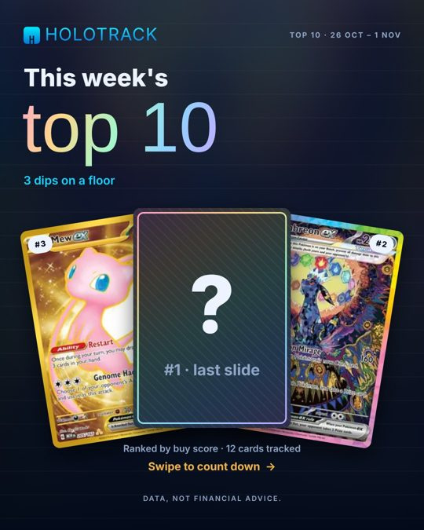

Pokémon card data
Spot cards early.
HoloTrack reads every card's own price history: where it found a floor, how often it held, how high it climbed. Then it points out the ones worth a look, before the talk starts.
One e-mail a week. You confirm once, and can leave with one click. Data, not financial advice.

This week's Top 10
Ten cards, ranked every Sunday. Each slide shows six months of price and one line on how the card is behaving.



Example slides
Receipts
Every card from every Top 10 we post, priced the Sunday it went out and judged 30 days later against the typical card over the same days. Misses stay on the board. A week shows here two weeks after its post.
TCGplayer Near Mint market price, in USD. The typical card is the median move of every English card worth $3 or more.
How a card reads
The price on its own says little. Where it sits against its own past says a lot.
- Support and its touchesA floor the price came back to and held, with every touch marked.
- Higher lowsA rising line under the price, when buyers keep stepping in earlier.
- High and lowThe top and bottom of six months, with the month they happened.
- An old floorSupport that gave way, now sitting overhead.
“Resting on a floor it has held 3 times.”
Every week
Three posts, the same days every week, on Instagram and YouTube.
Top 10
The ten cards that stand out this week, counted down.
Card spotlight
One card, its price story, its floor, and who is talking about it.
Set zones or sealed
A whole set against its own year, or a sealed box against what's inside.
The Top 10 in your inbox
Sunday morning, before it's posted.